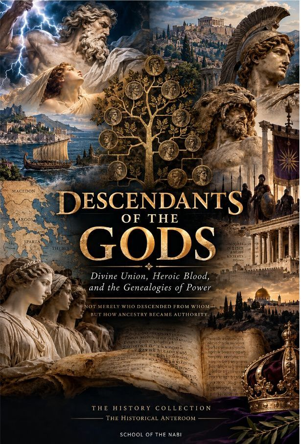

Descendants of the Gods
Genealogies of Power ChronoAtlas
Open the atlasAn interactive atlas showing how ancestry became authority across Greek, biblical, Iberian, and later historical claims.
Scripture
Genesis 10Ruth 41 Chronicles 1–3

Genealogies of Power ChronoAtlas
Open the atlasAn interactive atlas showing how ancestry became authority across Greek, biblical, Iberian, and later historical claims.